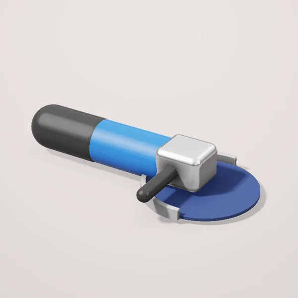
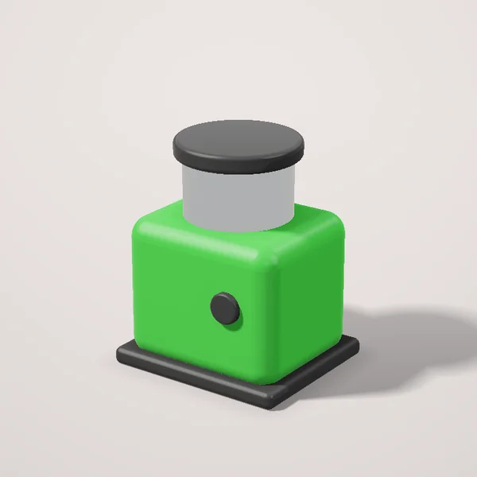
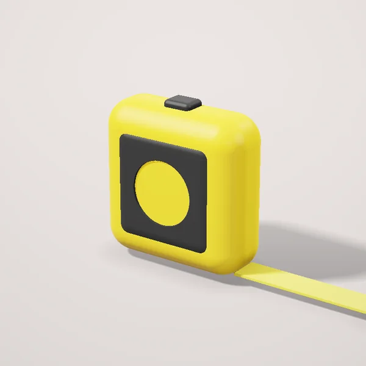
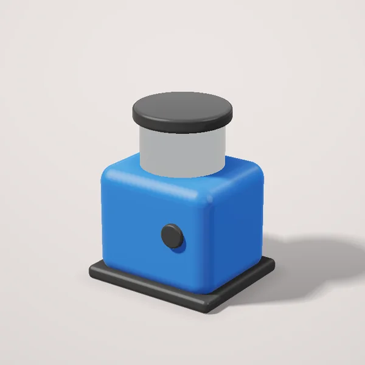
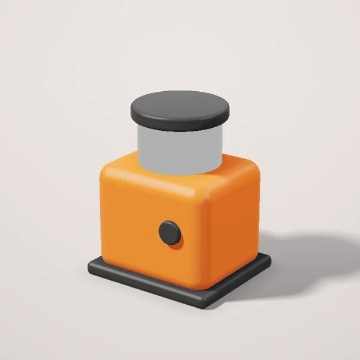
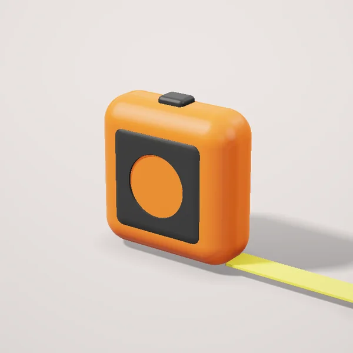
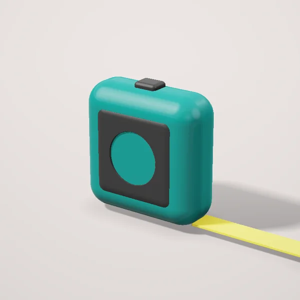

Asboblar Toşkentda
Elektr asboblar
 Perforator 800 Vt, SDS-plus881 000 so‘mdan
Perforator 800 Vt, SDS-plus881 000 so‘mdan Şurupovyort 18 V, 2 akkumulyator1 115 500 so‘mdan
Şurupovyort 18 V, 2 akkumulyator1 115 500 so‘mdan Bolgarka 125 mm, 1100 Vt640 000 so‘mdan
Bolgarka 125 mm, 1100 Vt640 000 so‘mdan Perforator 1500 Vt, SDS-max1 958 000 so‘mdan
Perforator 1500 Vt, SDS-max1 958 000 so‘mdan Akkumulyatorli perforator 18 V1 410 000 so‘mdan
Akkumulyatorli perforator 18 V1 410 000 so‘mdan Şurupovyort 12 V, 2 akkumulyator669 500 so‘mdan
Şurupovyort 12 V, 2 akkumulyator669 500 so‘mdan Zarbli drel 750 Vt805 000 so‘mdan
Zarbli drel 750 Vt805 000 so‘mdan Çötkasiz şurupovyort 18 V1 725 000 so‘mdan
Çötkasiz şurupovyort 18 V1 725 000 so‘mdan Bolgarka 230 mm, 2200 Vt1 152 000 so‘mdan
Bolgarka 230 mm, 2200 Vt1 152 000 so‘mdan
Akkumulyatorli bolgarka 125 mm, 18 V1 066 000 so‘mdan
Qöl asboblari
 Çilangar bolğasi 500 g65 000 so‘mdan
Çilangar bolğasi 500 g65 000 so‘mdan Otvyortkalar töplami, 12 dona95 000 so‘mdan
Otvyortkalar töplami, 12 dona95 000 so‘mdan Kuvalda 3 kg104 000 so‘mdan
Kuvalda 3 kg104 000 so‘mdan Mix suğurgiçli bolğa 450 g71 500 so‘mdan
Mix suğurgiçli bolğa 450 g71 500 so‘mdan Bitalar töplami, 32 dona76 000 so‘mdan
Bitalar töplami, 32 dona76 000 so‘mdan Dielektrik otvyortkalar, 7 dona150 500 so‘mdan
Dielektrik otvyortkalar, 7 dona150 500 so‘mdan
Ölçov asboblari

Lazerli nivelir 360°1 350 000 so‘mdan
Ruletka 5 m42 000 so‘mdan
Lazerli nivelir 3D, yaşil nur2 430 000 so‘mdan
Lazerli nivelir 2 çiziq607 500 so‘mdan
Ruletka 8 m57 000 so‘mdan
Ruletka 10 m75 500 so‘mdan